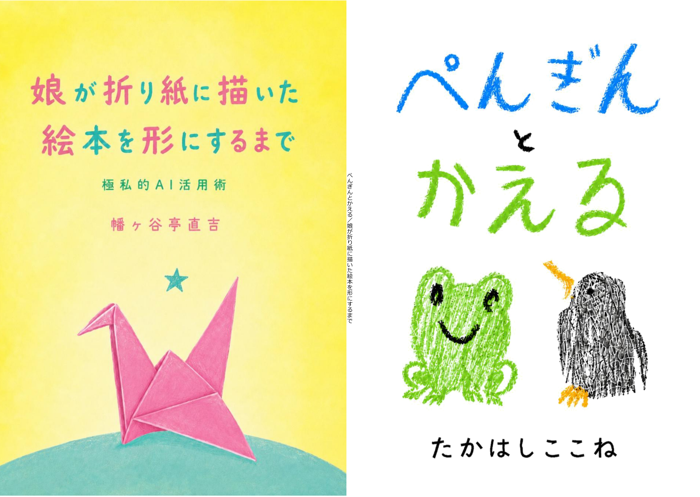

Doujinshi / ZINE
ぺんぎんとかえる／娘が折り紙に描いた絵本を形にするまで
6歳の娘が折り紙に描いた絵本を、一冊の本にしました。
書影

アニメーション版
本に収録した絵本をもとに、短いアニメーションを作りました。 よろしければ、あわせてご覧ください。
本について
紹介文
6歳の娘が折り紙に描いた絵本を、一冊の本にしました。紙に描かれた小さな物語を、ZINEという形に整えた親子制作の記録です。
ぺんぎんとかえるが登場する、短くて素朴な絵本です。子どもがそのとき描いた線や言葉をなるべくそのまま残しながら、本として手に取れる形にしました。
反対側から読むと、『娘が折り紙に描いた絵本を形にするまで — 極私的AI活用術』として、制作の動機や手順を読むことができます。子どもの絵を本にする過程と、そのなかでAIをどう使ったのかをまとめています。